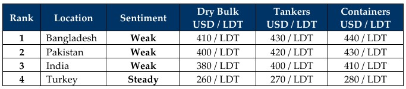

GMS Week 45 – TRADING DAY?
in Weekly Demolition Reports 10/11/2025

Some other day, just not today, or this week, or this month, or this year, or the last few for that matter. As president economic turmoil tears down the White House back home and economies around the world, his actions are directly leading to a meltdown that has consistently been affecting international markets month after month, including the advent of November 2025 as inflation is still rising at key ship recycling destinations, global steel prices are collapsing, currencies devaluing like it’s an overdue assignment, and a disjointed ratio of trading units vs recycling volumes, all wrapped up in a 2025 burrito of unnecessary bombastic.
To start, inflation is on the rise again in Pakistan with Turkey and Bangladesh reporting barely noticeable corrections – all while India and USA figures are still lampooning with pending updates at their ends. The Baltic Exchange also rose to the tune of nearly 2% in just about a month with Capes, Panamax, and smaller segment indices all clocking the week out with 3.1%, 09%, and 0.5% respective gains and the overall index firming 7% just this week. As sanctions and bans increasingly strike at the world’s trading units and the balance of the legally trading group seems increasingly burdened with shouldering the load of missing tonnage, which itself cannot even be recycled anywhere, it is certainly starting to show at the waterfront once again. And for the world of ship recycling, is a disastrous turn of events as 2026 is already at attention on the horizon.
Oil is likely to see similar performance hiccups as it declined nearly 20 basis points to end the week at levels barely above USD 60/barrel thank to global supply being on cue to outpace demand as the U.S. ramps up domestic production and investors continue to monitor the effects of Washington’s pressure-tactics on Moscow via pending sanctions on their top oil majors, including Rosneft PJSC and LukOil PJSC (LukOil even rumored to be filing for bankruptcy this week) and purchasing nations such as China and India now facing further economic pressures of their own. And all this while Dollars and lack of diplomacy are steering currencies into neverland.
At the micro end, an increasingly defunct sub-continent ship recycling sector is struggling to attain anywhere near reasonable / expected levels for another week as any vessels that are being proposed, are swiftly greeted with disappointing levels and are subsequently withdrawn to trade another day. Levels in both Pakistan and India have sunk firmly below USD 400/LDT as Bangladesh similarly struggles with declining steel prices and a viciously inert demand but still manages to remain just above USD 400/LDT. Apart from the odd LNG and older handymax bulkers with surveys due, there has been very little supply keeping recyclers active. On the flip side, this shortage has perhaps been a blessing in disguise as HKC upgrades continue at pace in both Bangladesh and (reportedly) Pakistan, with 18 yards have so far been HKC approved in Chattogram and 3 more set to follow before the end of the year, all while Gadani has yet to receive its first HKC yard approval as DASR certificate issuances allow local yards to stay afloat. Turkey is still waiting for them to join the party.
For Week 45 of 2025, GMS Market Rankings / vessel indications are as below

📄 Download PDF: Ship-recycling-market-insight-Week-45-11-07-2025-Trading_Day.pdfSource: GMS,Inc. https://www.gmsinc.net/gms_new/index.php/web
 Translate
Translate{kind=link}